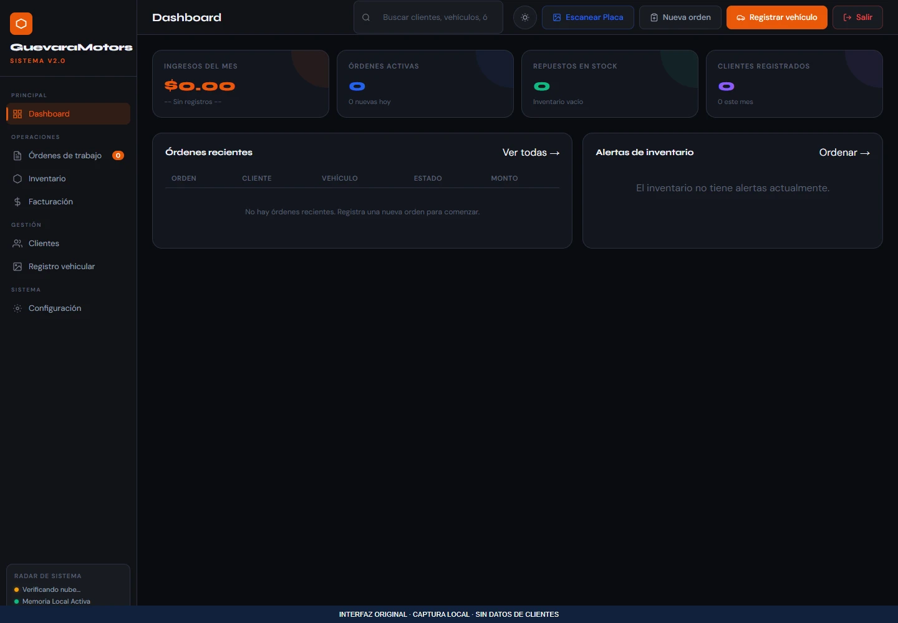
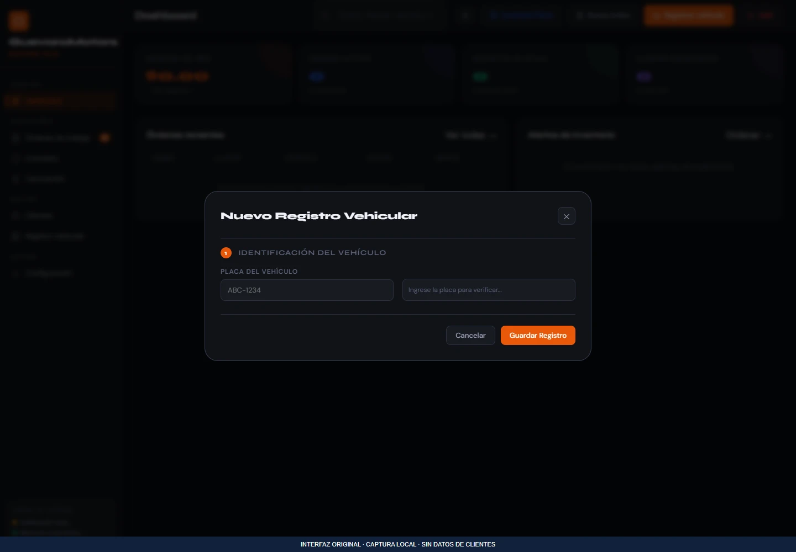

CRM y clientes
DemoGestión de taller mecánico
Aplicación para organizar clientes, vehículos, órdenes de trabajo, repuestos y registros de facturas de un taller.
Qué resuelve
Aplicación para organizar clientes, vehículos, órdenes de trabajo, repuestos y registros de facturas de un taller.
Funciones implementadas
- Registro y consulta de clientes y vehículos
- Creación y listado de órdenes de trabajo
- Registro de repuestos e inventario
- Registro de facturas en la base de datos
- Ruta de reconocimiento de placas mediante un servicio externo
Demostración pública no disponible. Puedes consultar el alcance o solicitar una presentación.
Consultar sobre este proyecto ↗VISTA DEL PROYECTO
Fotografías y capturas · 3
Selecciona una imagen para ampliarla. Usa las flechas para recorrer la galería.
 Ampliar ↗
Ampliar ↗

Ampliar ↗

Ampliar ↗EN LA PRÁCTICA
Ingreso de un vehículo
- 1
Registrar o consultar el cliente.
- 2
Ingresar el vehículo y abrir su orden de trabajo.
- 3
Consultar órdenes, repuestos y registros de facturas.
El registro de facturas no acredita emisión fiscal electrónica.
Añadir fotos a este proyecto ↗
Abre primero el gestor local con python tools/manage_media.py.